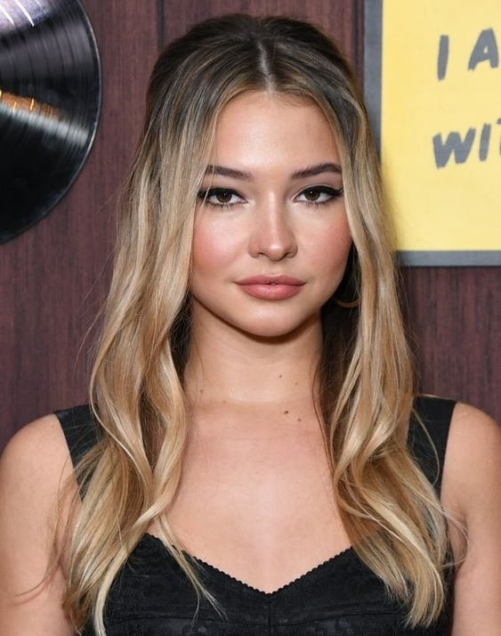

|  |
Madelyn Renee Cline (21 de dezembro de 1997) é uma atriz e modelo norte-americana. Ficou conhecida por interpretar Sarah Cameron na série de drama Outer Banks da Netflix. A Madelyn nasceu na cidade de Charleston, localizada em Carolina do Sul nos Estados Unidos, sendo a filha da corretora imobiliária Pam Cline e de Mark Cline, um engenheiro. Quando mais nova, ela passou os verões na Cidade de Nova York trabalhando em comerciais de televisão, alguns sendo para a T-Mobile e Sunny D. Instagram da Shawn! Filmes e séries que tem sua participação! |